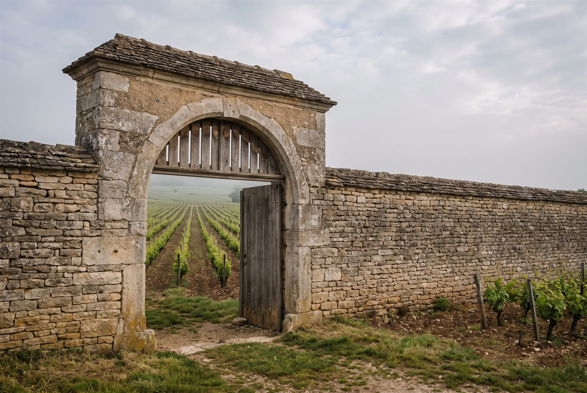

Les domaines · Côte de Beaune · Puligny-Montrachet
17
Puligny-Montrachet · Côte de Beaune
Domaine Pernot-Bélicard
Des blancs de Puligny classiques, précis et minéraux, vendangés tôt pour préserver la fraîcheur.

Ambiance de Puligny-Montrachet
Petit-fils de Paul Pernot, Philippe Pernot fonde le domaine en 2009 après son mariage avec la fille de la famille Bélicard, qui possédait des vignes à Puligny-Montrachet. Le domaine réunit ainsi des parcelles des deux familles, à Puligny et à Meursault, sur environ 6,5 hectares travaillés à la main, avec un ébourgeonnage sévère et un soin particulier porté aux vieilles vignes. Les blancs sont élevés en fût puis affinés quelques mois en cuve sur lies fines.
Blancs
- Cépage · Chardonnay
- Cépage · Chardonnay
- Cépage · ChardonnayPetite parcelle sur argile, calcaire et graviers, située au-dessus des Combettes; élevage de 15 mois en fût.
- Cépage · ChardonnayVignes de plus de 60 ans sur calcaire jurassique dur, voisines des Referts, pour un vin précis et pierreux.
- Cépage · ChardonnayClimat haut sur le coteau, autrefois boisé.
- Cépage · Chardonnay
- Cépage · Chardonnay
- Cépage · ChardonnayAssemblage de huit parcelles de village, dont Les Houlières, La Rue aux Vaches et Les Boudrières, sur argile brune et calcaire.
- Cépage · Chardonnay
- Cépage · Chardonnay
Ces cuvées vous parlent ?
Demander les disponibilités